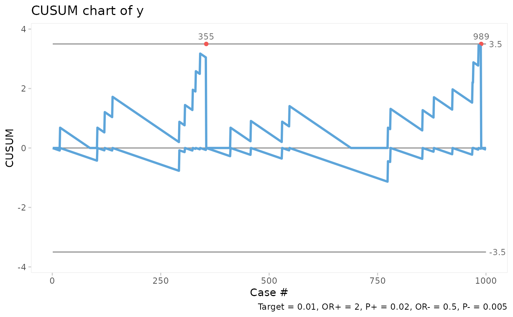
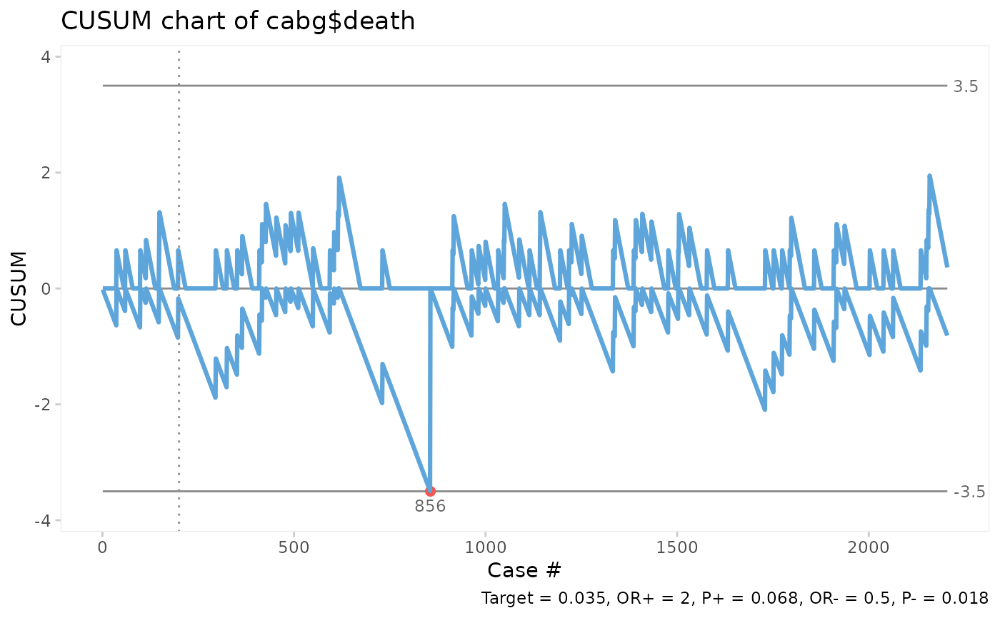
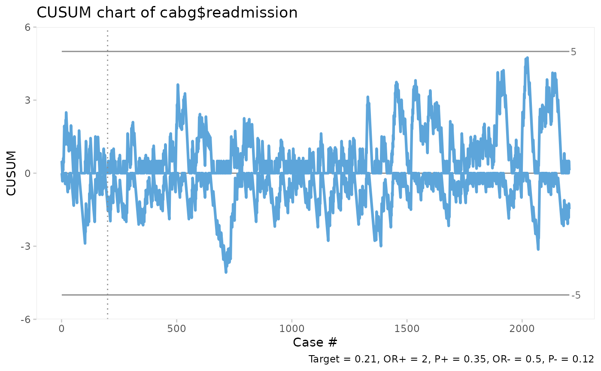

The Bernoulli CUSUM chart is useful for monitoring rare events data, e.g. surgical site infections and other types of complications. Based on Neuburger et al. (2017) https://dx.doi.org/10.1136/bmjqs-2016-005526.
bchart(x, target, or = 2, limit = 3.5, title = "", ylab = "CUSUM", xlab = "Case #")
| x | Logical, vector of succeses and failures. |
|---|---|
| target | Baseline risk (0-1) or number (>1) of last observation to end baseline period. |
| or | Positive odds ratio of minimal detectable change relative to baseline risk. |
| limit | Control limit. |
| title | Chart title. |
| ylab | Y axis label. |
| xlab | X axis label. |
An object of class ggplot.
Note that the diagnostic properties of the Bernoulli CUSUM chart is highly dependent on the choise of parameters, target, or and limit, and that these parameters should be decided by people with a solid understanding of the process at hand. The default parameters, or = 2 and limit = 3.5, should, however, work for most processes where the baseline (target) level is about 1 halving of the event rate relative to the target.
# Generate 1000 random succeses and failures with succes rate = 0.02 set.seed(1) y <- rbinom(1000, 1, 0.02) # Plot bchart assuming succes rate = 0.01, OR = 2, control limits = +/- 3.5. bchart(y, target = 0.01)# Plot bchart of CABG mortality using the first 200 surgeries to estimate target. bchart(cabg$death, target = 200)# Plot bchart of CABG readmissions setting the control limits = +/-5. bchart(cabg$readmission, target = 200, limit = 5)